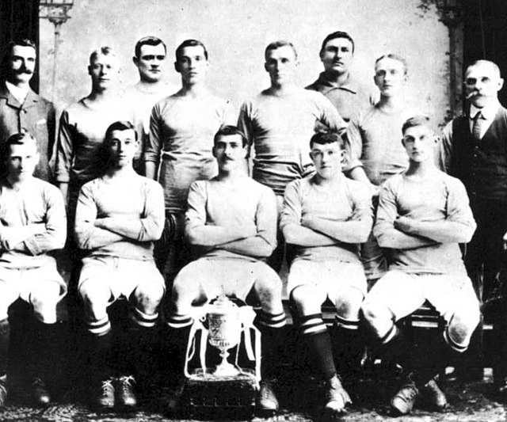
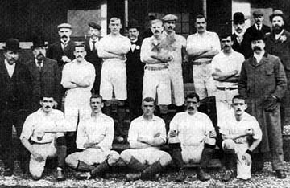
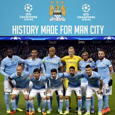
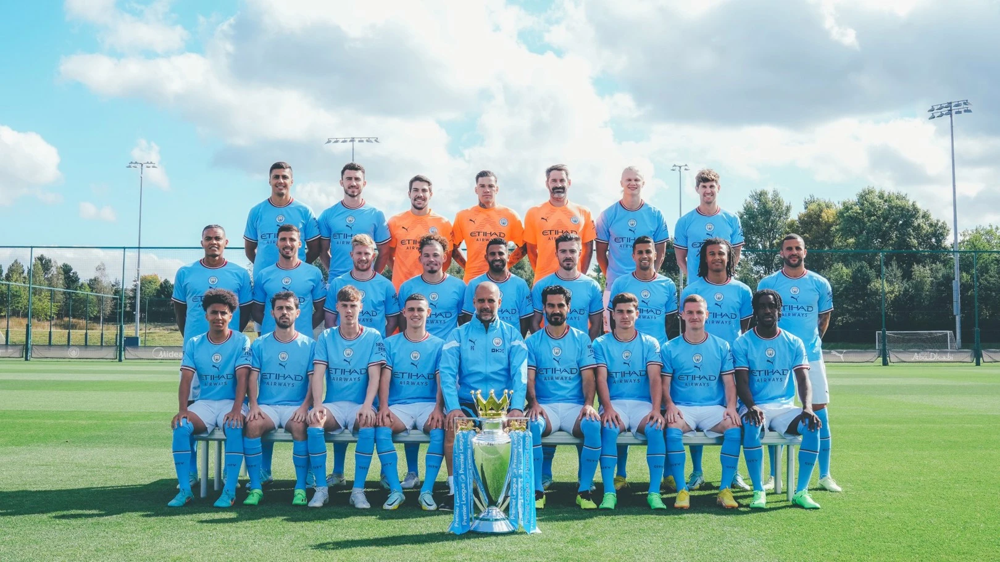

The history of Manchester City Football Club, a professional football club based in Manchester,
England, dates back to the,s formation in the 1880 by members St.Mark Church of England in West
Garton

The 1898-99 team that gained promotion to the First Divion.



Manchester City have won twenty-nine major honours throughout their history: eight lague title, six FA Cups
eight League Cup, six FA Community Shields, and one European Cup winners' Cup.